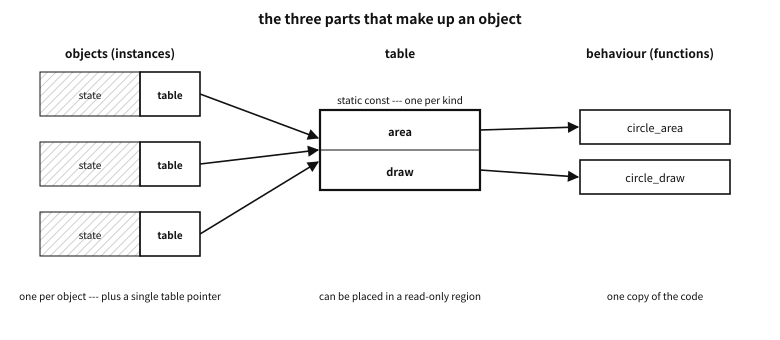

70 Imitating object orientation — the idea, and C’s bare hands
What to know first
Looking back
Chapter 68 said that a pointer to a table of function pointers as the first member of a struct gives polymorphism, and that GTK built a huge object system that way. Does that mean object-oriented programming can be done in C?
A. It can be imitated. What an object-oriented language does with syntax and a compiler — encapsulation, polymorphism, inheritance, construction and destruction — is done in C by convention and by hand. The imitation is useful, and the Linux kernel, GTK and countless libraries prove it. But the imitation has clear limits. A promise the compiler does not keep is broken somewhere in the end. This part covers imitating well, and looking at the limits honestly. This chapter is the first step.
The need for this chapter, and its context
By the end of this chapter
The questions this chapter answers
- Must an opaque type always be allocated on the heap?
70.1 What object orientation is — first principles#
First, a word must be separated in two. In chapter 36 this book called a C object “a region of memory that holds a value”; a single int is a C object. The object of object-oriented programming (OOP) is a different word — it means a unit that bundles state with the behaviour that handles that state. In this part “object” has the second meaning.
Object orientation is usually explained with four words.
| Word | Meaning | What it is for |
|---|---|---|
| Encapsulation | an object’s state changes only through that object’s behaviour | the invariants are kept in one place |
| Polymorphism | the same request is answered by different behaviour for each kind of object | the caller need not know the kind |
| Inheritance | one kind takes over the state and behaviour of another | the common part is written once |
| Abstraction | the outside sees only what is done, not how | it makes places that can be changed |
Table 70.1 — Four words used to explain object orientation
The four were not a bundle from the start.
Simula 67, counted as the first object-oriented language, was made by Ole-Johan Dahl and Kristen Nygaard at the Norwegian Computing Center for simulation. Each kind of thing to simulate — ships, ports, cargo — had a “class”, and similar things inherited a class. Classes and inheritance come from this line.
The other line is Alan Kay and the Smalltalk of Xerox PARC. Kay is credited with coining the term “object-oriented”. The object he pictured was a unit like a biological cell, or a computer on a network, communicating with others only by messages. Inheritance was not at the centre of his picture — more on that at the end of this part (chapter 75).
Today “object orientation” mostly means the shape of C++, Java and C#: classes, inheritance and virtual functions. This part, too, is about imitating that shape in C, but it is worth keeping in mind that it is not the only shape object orientation has.
70.2 C has none of it — it is imitation#
C23 has no classes, methods, inheritance, access control, constructors or destructors. It has structs, functions, function pointers and header files. With those, the parts of an object-oriented language are imitated one by one.
| What the language does | The C imitation | Who keeps the promise |
|---|---|---|
| Encapsulation, access control | opaque types — only the declaration in the header, the definition in the .c (chapter 61) | the compiler, partly (it hides the size and the members) |
Methods and this | functions that take the object pointer as their first argument | people |
| Virtual functions, polymorphism | tables of function pointers (chapter 68) | people — the compiler does not notice a wrongly filled table |
| Inheritance | the base struct as the first member, or container_of (chapter 48) | people — nobody checks that a down-cast (turning a pointer to the base into a pointer to the derived kind) is right |
| Constructors | factory functions …_new, initialisation functions …_init | people — forget to call one and the object is rubbish |
| Destructors, RAII (clean-up that runs by itself when a scope ends) | call …_free or …_fini yourself | people — forget and it leaks |
| Namespaces | prefixes (chapter 64) | people |
| Overloading | _Generic (chapter 67), or different names | the compiler (_Generic picks the branch) |
Table 70.2 — What an object-oriented language does, and what C does by hand
Look at the right-hand column. Most of it says “people”.
70.2.1 Beware of “just do it well”#
There is a common defence of the imitation: “C can do all of it. The programmer just has to do it well.” That is half right. C can do all of it. But “just do it well” is not a design. It only writes down in advance that “when this promise breaks, it is the programmer’s fault”.
Doing by hand what a language would do means that it must be right every time: every time a table is filled, every cast, every construction and every destruction. Wrong once in a thousand times, a program with a thousand objects is always wrong. And the accidents this book showed in chapter 57 all happened in code written by people who “did it well”.
So this part takes this attitude: make structure, not people, keep the conventions. Opaque types make the compiler stop outside code from touching the members. Checking cast macros catch a wrong down-cast, at run time if nothing else. And whatever a tool can catch is left to the tool.
examples-en/oop/bad_call/shapes.c
/* A hand-made "method table" filled in carelessly: circle_area takes a circle,
but the table's slot expects a function taking a shape. The cast makes the compiler
quiet; calling through it is undefined behaviour (C23 6.3.2.3p8). */
#include <stdio.h>
struct shape;
struct shape_ops { double (*area)(const struct shape *); };
struct shape { const struct shape_ops *ops; };
struct circle { struct shape base; double r; };
static double circle_area(const struct circle *c) { return 3.0 * c->r * c->r; }
static const struct shape_ops circle_ops = {
/* the cast hides the mismatch */
.area = (double (*)(const struct shape *))circle_area,
};
int main(void)
{
struct circle c = { .base.ops = &circle_ops, .r = 2.0 };
struct shape *s = &c.base;
/* "works" on this machine --- and is still wrong */
printf("area = %g\n", s->ops->area(s));
return 0;
}
Output
plain build : area = 12
(gcc has no -fsanitize=function; using clang for the second build)
checked build : stopped
call to function circle_area through pointer to incorrect function type 'double (*)(const struct shape *)'
A function of a different type was pushed into a slot of the table with a cast. On this machine the “right” area comes out — which makes it more dangerous. Calling a function through a pointer of an incompatible type is undefined behaviour, or UB (undefined behaviour) (C23 6.3.2.3p8). Clang’s -fsanitize=function checks the type of the function at every indirect call and stops here. GCC has no such check.
Platform note. -fsanitize=function
A common misconception. “An object system written in C does the same as C++. It just takes more work”
dynamic_cast), and that no object skipped its constructor. In the C imitation those checks disappear, turn into run-time checks, or become the job of test tools. The accurate difference is not “more work” but “fewer warnings when you get it wrong”.70.3 Separate the three parts — state, behaviour, table#
The first principle to set when building objects in C is to keep three things apart.
| Part | Its shape in C | How many copies |
|---|---|---|
| State — member variables | the instance struct | one per object |
| Behaviour — methods | functions (static, or external with a prefix) | one copy of the code |
| Table — the virtual function table | a static const struct of function pointers only | one per kind |
Table 70.3 — The three parts that make up an object
The vtable.c of chapter 68 had this shape. The object holds only one pointer to its table.

Figure 70.1 — State per object, one table per kind, one copy of the behaviour.
There are three reasons to keep the table outside the object, one per kind.
- Size. Copy the function pointers into every object and an object with five methods grows by 40 bytes; a million objects is 40 MB. With the table kept apart, it is 8 bytes per object.
- Change in one place. To change a kind’s behaviour, change one table. With every object holding its own function pointers, there is no telling which objects still hold the old function.
- Security. A function pointer in writable memory is a target — let one buffer overflow onto it and the program’s flow is taken over (chapter 57). Make the table
static constand the compiler and linker can put it in a read-only region. The standard does not require that, but common implementations do it. All that stays in the object is the one pointer to the table. If the table has to be built at run time, it can be sealed read-only once it is finished (chapter 72).
The Linux kernel developer Neil Brown, describing the object-oriented patterns of the kernel, put the “pure” table of function pointers only at the base and wrote that such tables rarely contain anything other than function pointers. The exceptions are fields needed to register the implementation, such as the owning module or a name.1
70.3.1 Empty slots in the table#
Leaving a slot empty (NULL) is a common convention — “this kind does not define this behaviour of its own”. Then the caller has to check every time, as in if (ops->flush) ops->flush(obj);. Brown’s article points out the cost of this convention and says that filling in the default behaviour explicitly is often cleaner: keep a “bundle of defaults” in a macro with C99 designated initialisers (initialisers that name each slot, as in .flush = …), and let each kind override only the slots that differ. With no empty slots there is no check for the caller — and no accident from forgetting it.
The example below puts the two conventions side by side — convention 1, which leaves slots NULL, and convention 2, which fills every slot first from a bundle of defaults. Two kinds of stream use a three-slot table of write, flush and close: a “file” that collects what is written and sends it out on flush, and a “memory” stream that stores at once and so has nothing to flush. Suppose close is a slot that was added to the table later.
examples/oop/defaults.c
/* 표의 빈칸 --- 두 관례를 나란히 놓는다.
관례 1: 할 일이 없는 칸은 NULL 로 비워 두고, 부르는 쪽이 칸마다 확인한다.
관례 2: 기본 행동을 함수로 두고 「기본값 묶음」 매크로로 모든 칸을 먼저 채운 뒤,
종류마다 다른 칸만 덮어쓴다(N. Brown, LWN 2011). 부르는 쪽은 그냥 부른다.
스트림 두 종류: 「파일」은 쓴 것을 모았다가 flush 때 내보내고, 「메모리」는 바로 적으니
flush 할 일이 없다. close 는 표에 *나중에 더한* 칸이라고 치자. */
#include <stdio.h>
struct stream;
struct stream_ops {
void (*write)(struct stream *s, const char *text);
void (*flush)(struct stream *s);
void (*close)(struct stream *s); /* 나중에 더한 칸 */
};
struct stream { const struct stream_ops *ops; const char *name; int pending; };
static void file_write(struct stream *s, const char *text)
{
(void)text;
s->pending++; /* 모아 두기만 한다 */
}
static void file_flush(struct stream *s)
{
printf(" %s: flushed %d pending writes\n", s->name, s->pending);
s->pending = 0;
}
static void memory_write(struct stream *s, const char *text)
{
printf(" %s: stored \"%s\"\n", s->name, text);
}
/* ---- 관례 1: 빈칸 ---- */
static const struct stream_ops file_ops_1 = { .write = file_write, .flush = file_flush };
static const struct stream_ops memory_ops_1 = { .write = memory_write };
/* 두 표 모두 close 를 모른다 --- 칸이 생기기 전에 쓴 표라 NULL 이다 */
static void finish_1(struct stream *s)
{
if (s->ops->flush) /* 부르는 쪽마다 칸마다 이 확인 */
s->ops->flush(s);
if (s->ops->close)
s->ops->close(s);
}
/* ---- 관례 2: 기본값 묶음 ---- */
static void stream_flush_nothing(struct stream *s) { (void)s; }
static void stream_close_default(struct stream *s)
{
printf(" %s: closed (default close)\n", s->name);
}
#define STREAM_OPS_DEFAULTS \
.flush = stream_flush_nothing, .close = stream_close_default
/* 같은 칸을 두 번 초기화하면 뒤의 것이 이긴다(C23 §6.7.11p20). 그러나 컴파일러는 이것을
실수로 두 번 쓴 칸과 구별하지 못해 경고한다(GCC -Wextra 의 -Woverride-init,
Clang 의 -Winitializer-overrides). 표를 선언하는 이 몇 줄에서만 끈다. */
#pragma GCC diagnostic push
#pragma GCC diagnostic ignored "-Woverride-init"
static const struct stream_ops file_ops_2 = {
STREAM_OPS_DEFAULTS,
.write = file_write,
.flush = file_flush, /* 기본값을 덮어쓴다 */
};
static const struct stream_ops memory_ops_2 = {
STREAM_OPS_DEFAULTS,
.write = memory_write, /* flush · close 는 기본 그대로 */
};
#pragma GCC diagnostic pop
static void finish_2(struct stream *s)
{
s->ops->flush(s); /* 빈칸이 없으니 확인도 없다 */
s->ops->close(s);
}
int main(void)
{
puts("convention 1: empty slots, the caller checks each one");
struct stream f1 = { .ops = &file_ops_1, .name = "file" };
struct stream m1 = { .ops = &memory_ops_1, .name = "memory" };
f1.ops->write(&f1, "a");
f1.ops->write(&f1, "b");
m1.ops->write(&m1, "c");
finish_1(&f1);
finish_1(&m1);
printf(" memory flush slot: %s\n", memory_ops_1.flush ? "filled"
: "NULL --- a caller that forgets the check calls a null pointer");
printf(" close slot in both tables: %s\n",
file_ops_1.close || memory_ops_1.close ? "filled" : "NULL --- nobody closes");
puts("convention 2: defaults filled in, the caller just calls");
struct stream f2 = { .ops = &file_ops_2, .name = "file" };
struct stream m2 = { .ops = &memory_ops_2, .name = "memory" };
f2.ops->write(&f2, "a");
f2.ops->write(&f2, "b");
m2.ops->write(&m2, "c");
finish_2(&f2);
finish_2(&m2);
return 0;
}
Output
convention 1: empty slots, the caller checks each one
memory: stored "c"
file: flushed 2 pending writes
memory flush slot: NULL --- a caller that forgets the check calls a null pointer
close slot in both tables: NULL --- nobody closes
convention 2: defaults filled in, the caller just calls
memory: stored "c"
file: flushed 2 pending writes
file: closed (default close)
memory: closed (default close)
In convention 1 a slot with nothing to do (the memory stream’s flush) and a slot nobody has filled in yet (close in both tables) are both NULL, so finish_1 has to check each slot. A call that leaves out even one of these checks calls a null pointer. In convention 2 STREAM_OPS_DEFAULTS fills every slot first, and each table overrides only the slots that differ. The late close got one default written into the bundle, and both tables have the slot without either being touched. So finish_2 has no checks.
Convention 2 has a cost too. Initialising the same slot twice is allowed by the standard and the later one wins (C23 §6.7.11p20), but the compiler cannot tell this from a slot written twice by mistake, so it warns. GCC 14 warned under -Wextra (-Woverride-init); Clang 19 warned with no options at all (-Winitializer-overrides). The example turns the warning off with #pragma only for the few lines that declare the tables. If you would rather not turn it off, drop the bundle and have each table name every slot, writing a default function such as stream_flush_nothing into the slots with nothing to do. The gain — no empty slots — is the same; the price is that every table must be edited each time a slot is added.
70.4 Opaque types — C’s version of encapsulation#
Chapter 61 showed opaque pointers: the struct is only declared in the header and defined in the .c. Seen as objects, that is the strongest encapsulation C can give.
examples-en/oop/opaque/stack.h
/* stack.h --- what the user of the library sees. The struct is declared, never defined:
outside stack.c nobody knows its size or members, so nobody can depend on them. */
#ifndef PCB_STACK_H
#define PCB_STACK_H
#include <stddef.h>
typedef struct pcb_stack pcb_stack; /* incomplete type: a name, nothing more */
pcb_stack *pcb_stack_new(size_t capacity); /* the factory: the only way to get one */
void pcb_stack_free(pcb_stack *s); /* its pair: the user must call it */
bool pcb_stack_push(pcb_stack *s, int v); /* the object always comes first */
bool pcb_stack_pop(pcb_stack *s, int *out);
size_t pcb_stack_size(const pcb_stack *s); /* const: only reads */
#endif
Output
push 1: ok
push 2: ok
push 3: ok
push 4: full
size 3
pop 30
pop 20
pop 10
sizeof(pcb_stack) outside stack.c: refused by the compiler (incomplete type)
main.c can hold a pointer to pcb_stack and call the functions, and nothing more. It can neither read the members nor ask the size — as the last line shows, the compiler refuses sizeof(pcb_stack) (an incomplete type, chapter 27). So stack.c can change the members, change the size, or cut the allocation to one with a flexible array member without breaking the outside code.
There is one price — the outside does not know the size, so the outside cannot allocate. Objects are always made by the library (a factory). They cannot live on the stack or be lined up in an array. So small, numerous values (points, colours, small vectors) are not made opaque but kept as public structs. It is a choice between encapsulation and layout (chapter 51).
Q. Must an opaque type always be allocated on the heap?
A. No. The library only has to take the storage from outside. One way is to take an allocator as an argument (t_new(alloc, …)) — the caller hands over an arena or a pool (a large block of memory reserved in advance) and the object is made inside it (the lifetime conventions in chapter 71). The other is to tell the size through a function — the caller asks size_t t_size(void), sets aside that much room (aligned for max_align_t) and passes it to t_init(mem). Both still hide the members. But in the second the size is known only at run time, so the object cannot be a static array or a struct member.
70.5 Names — the prefix is the namespace#
C’s external names live in one yard (chapters 63–64). When two libraries export functions with the same name, the link fails — or, worse, one of them is quietly called. What C++‘s namespace does is done in C by prefixes. This is not taste but necessity — a stack_push exported without a prefix will meet somebody else’s stack_push one day.
In an object system, prefixes go as far as showing the structure.
- Functions are
prefix_type_verb—pcb_stack_push,gtk_widget_show. - Types are
prefix_type, or camel case likeGtkWidget. - Macros and constants take an upper-case prefix,
PCB_,GTK_. - Reserved names (those beginning with an underscore and a capital, and so on) are not used (chapter 63).
The prefix table in chapter 64 showed the conventions of real libraries. One thing to add here: inside one library, keep the rule without exception. When “which behaviour of which type is this?” can be read from the name alone, the prefix does more than a namespace.
70.6 The first argument is the object — this by hand#
C++‘s obj.push(1) is pcb_stack_push(obj, 1) in C. The this that C++ hides is passed by hand as the first argument. Putting it first is a convention, but one followed by nearly every C library — the reader sees at a glance “what is this call about?”.
- Behaviour that only reads takes a
constobject.size_t pcb_stack_size(const pcb_stack *s). It corresponds to a C++constmethod, and the compiler checks the promise to only read. - Do not change the order. If some functions in a library take the object first and others last, someone will pass it in the wrong place. The standard library’s
fputs(s, f)andfprintf(f, …)are the counter-example — the stream comes last in one and first in the other. - Decide the contract for a null object.
pcb_stack_free(nullptr)does nothing (likefree) — deciding it that way keeps clean-up code simple.pcb_stack_push(nullptr, 1)breaks the contract — decide whether to check and return an error or to stop with an assertion, and write it down (chapter 37).
70.7 The six chapters of this part#
This chapter has come as far as the imitation’s bare hands — one table, one hidden struct, prefixes, the first argument. The remaining five chapters look in turn at what to build with those hands, what is expensive, what others have built, and where to stop.
| Chapter | What it asks | Its main tools |
|---|---|---|
| chapter 70 | What is object orientation, and what does C lack? | separating state, behaviour and table; opaque types; prefixes; the first argument |
| chapter 71 | How to build a table — polymorphism, inheritance, overloading, versions, lifetime | static const tables, derived tables that embed the base table, size fields |
| chapter 72 | What if the table cannot be known at compile time? | tables built and sealed at run time, fat pointers, calls looked up by name |
| chapter 73 | What does an indirect call really cost? | measurement, ways to remove indirect calls, the cost of the security guards (retpoline, CFI) |
| chapter 74 | What have others built in C? | Objective-C, Xt, GObject, kernels, SQLite, OpenSSL, papers |
| chapter 75 | Where to stop? | how far to go with macros, SOLID, two limits, the expression problem, back to the first idea |
Table 70.4 — The six chapters of Part XI
70.8 Summary#
| Topic | The point |
|---|---|
| First principles | an object is a bundle of state and behaviour. Two lines: Simula’s classes and inheritance, and Smalltalk’s messages |
| Imitation and its limits | most parts of the imitation are kept by people. Instead of “just do it well”, let structure and tools keep them |
| Three parts | state per object, one copy of the behaviour, one table per kind (static const) |
| Empty slots | a NULL slot asks every caller to check. Fill it from a bundle of defaults and there is neither the check nor the accident |
| Opaque types | the strongest encapsulation C can give. The price: “the outside cannot allocate” |
| Names and the first argument | prefixes are a necessity. The object comes first; const if it only reads; write down the contract for a null object |
Table 70.5 — Imitating object orientation — one line each
The bare-handed tools are in place. The next chapter takes the most used of them — the table of function pointers — builds polymorphism and inheritance with it, and makes the table survive new versions and the end of an object’s life.
Notes
- N. Brown, “Object-oriented design patterns in the kernel, part 1”, LWN.net, 2011-06-01. ↩